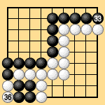
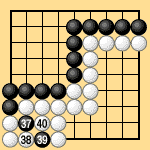
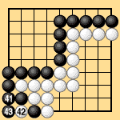

| 6.7 Three Points without Capturing (1) |
|---|
| In Dia. 6-11-1, by traditional territory rules the game ends with Black 33 but White gets three points in the bottom left without capturing. The result is a draw. |
|  | |
|
| Under area rules III the position is played out. White 34 passes, Black 35 passes, then White captures at 36. Continuing through Dias. 6-11-2 and 11-3, after White connects the ko with 44 both sides pass, ending the game. The result is again a draw. |
|  |  | |
| Dia. 6-11-2 (37-40) |
|
|---|